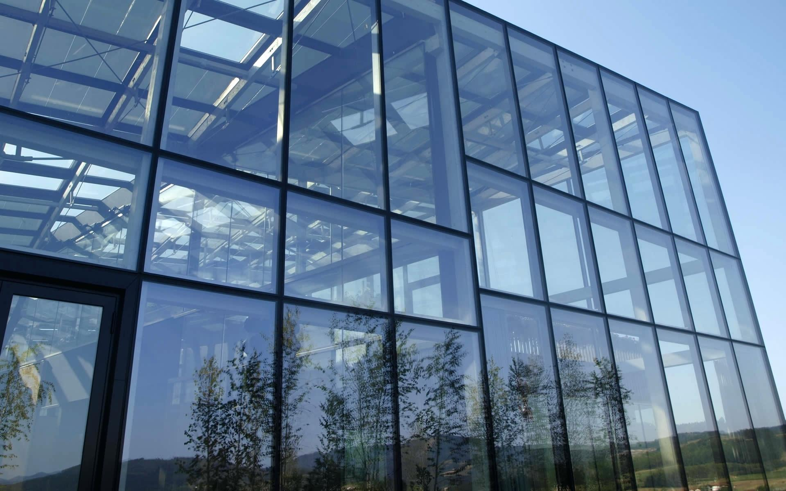

ALUTAG · Ростовская областьАлюминиевое остекление.
Алюминиевое остекление.
Для вашего объекта.
Изготавливаем светопрозрачные алюминиевые конструкции для нежилых помещений. Фасады, входные группы и внутреннее остекление в Ростовской области.
Рассчитать остекление
ПРИМЕРЫ РЕШЕНИЙФасад. Входная группа.
Фасад. Входная группа.
Офисное пространство.
Для разных частей здания нужны разные конструкции. Обсудим назначение помещения и параметры проёмов, подберём решение и подготовим расчёт.
Обсудить мой объект